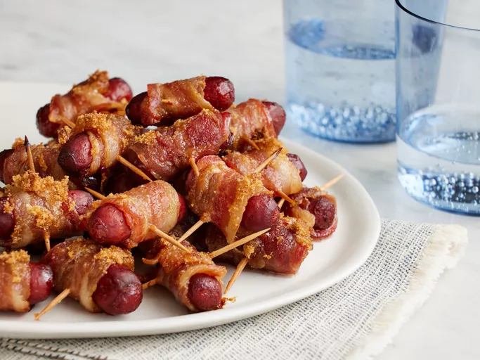

Bacon Wraps

Description
Bacon-wrapped smokies will liven up any party, from big tailgates to cozy family get-togethers.
This recipe for bacon-wrapped smokies couldn't be easier
to make with just a few ingredients!
Ingredients
- Bacon: This bacon-wrapped smokies recipe starts
with a pound of bacon strips, cut into thirds.
- Cocktail wieners: You'll need a package of beef cocktail wieners, which can be found
in the refrigerator section of your grocery store.
- Toothpicks: A toothpick secures the bacon to the wieners so the smokies stay together during the baking process.Toothpicks: A toothpick secures the
bacon to the wieners so the smokies stay together during the baking process.
- Brown sugar: Brown sugar lends warmth and welcome sweetness.
Directions
- Wrap each wiener in bacon, secure with a toothpick, and sprinkle
with brown sugar. Bake until the bacon is crisp and the sugar is bubbling.
Home